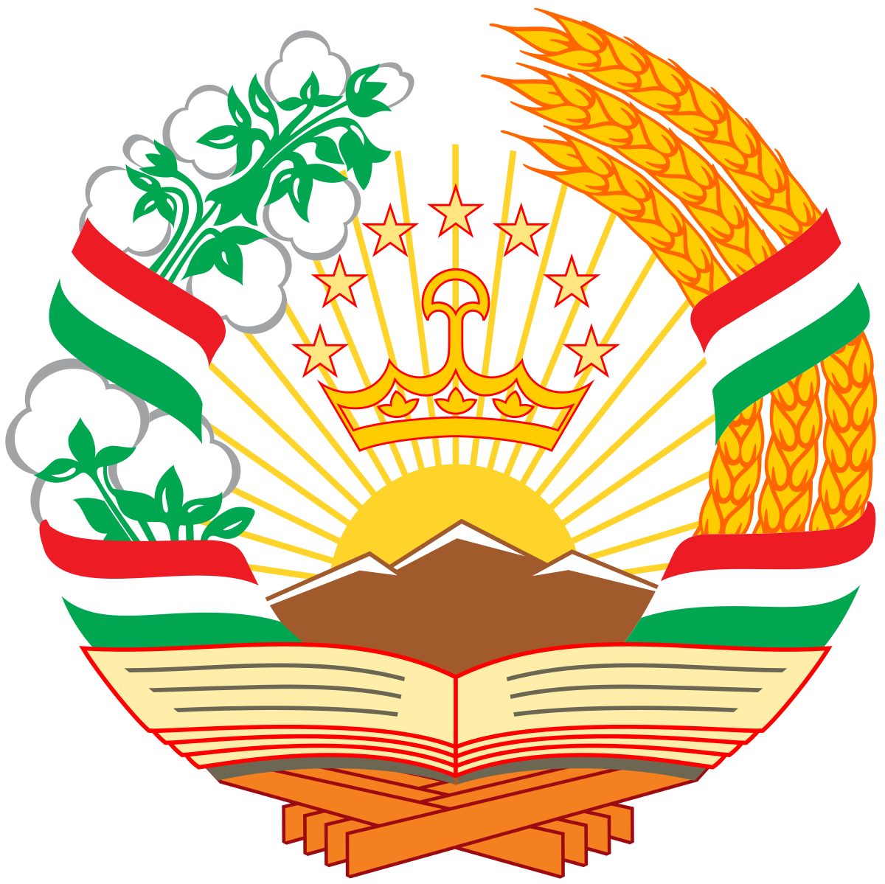
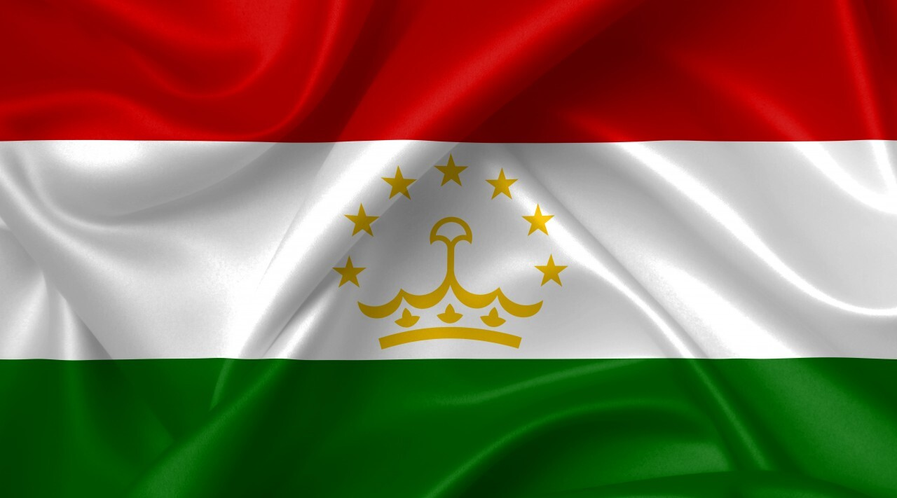

Герб
Герб Таджикистана представлен кругом с изображением гор, солнца и колосьев, а также национальной ленты. Он был утвержден 18 ноября 1993 года и отражает стремление Таджикистана к развитию, сохранению культуры и традиций, а также национальному единству.
Флаг
Флаг Таджикистана состоит из трех горизонтальных полос: красной, белой и зеленой, с изображением золотой короны и семи звезд в центре. Он был принят 24 ноября 1992 года, и его дизайн был основан на флаге, который использовался в 1953–1991 годах в Таджикской ССР.